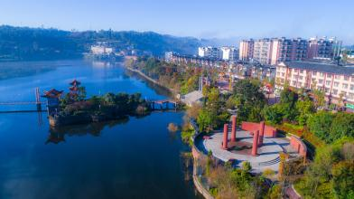

楚雄彝族自治州属于云南省下辖的自治州之一,位于云南省中部偏北，地跨北纬24°13′-26°30′、东经100°43′-102°30′，属云贵高原西部、滇中高原的主体部位，楚雄州境内路网、水网、电网、能源管网、通信网密布,素有
“省垣门户、滇中走廊、川滇通道”之美誉。东靠昆明市，西接大理白族自治州，南连普洱市和玉溪市，北临四川省攀枝花市和凉山彝族自治州，西北隔金沙江与丽江市相望，是省会昆明市西出滇西7州（市）及缅甸的必经之地，故有“迤西咽喉”之称。全州行政区域总面积29258平方千米。自治州机关驻楚雄市城区，海拔1773米，东距省会昆明市区165千米。
2018年12月，楚雄入选2018年度全国县域经济投资潜力100强排名榜第62位。